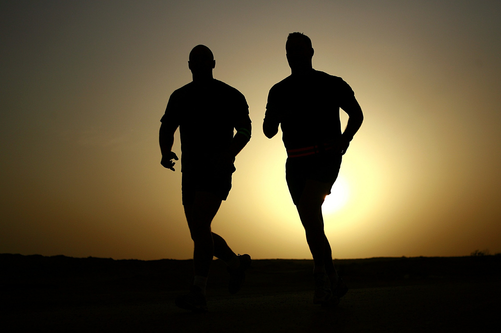

BENEFITS OF BEING ACTIVE
FROM THEN TO TODAY
It’s well known that practicing any kind of physical activity or physical exercises,
is a great idea.
Since ancient times humans had to be always active.
A thousand years ago because of a survival matter, and today because…
Well, nowadays seems that a lot people forgot the importance of being active,
the benefits and the advantages that physical activity gives, especially the youngest people.
According to the “World Health Organization”, 1 of 4 adults is not active enough and more than 80% of the world's adolescent population is insufficiently physically active.
What people don’t know, maybe, is that being not active enough expose ourselves to many risks and disease.
All your problems can be easily solved by just keeping you informed about what you can do to be always healthy and live well.
BE ACTIVE
If you are active, you can prevent yourself from all the risks or disease, and obtain many benefits as: muscular and cardiorespiratory improvements, bones and functional health, risk of hypertension, coronary heart disease, stroke, diabetes, various types of cancer (including breast cancer and colon cancer), and depression reduced, good energy, weight control and mood boost.
As you can see, the benefits are not just physical, but also mental.
It’s important for you to keep yourself active, to help your mental and body health and to do so, you should be aware of the risks and benefits as well. Be always informed about how to prevent you from all the risks and about the endless possibilities that you have to keep yourself active.